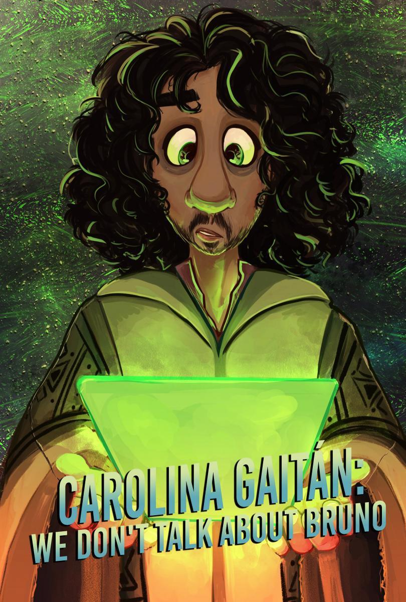
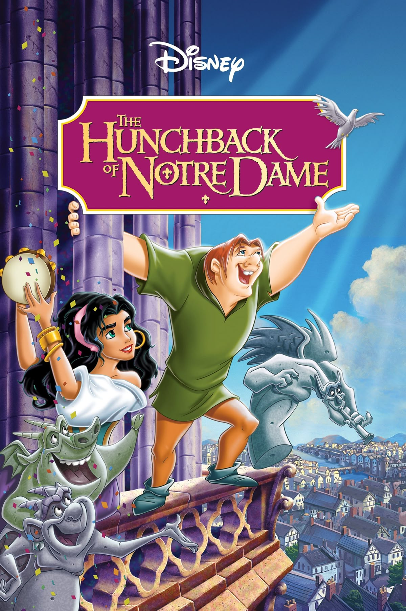
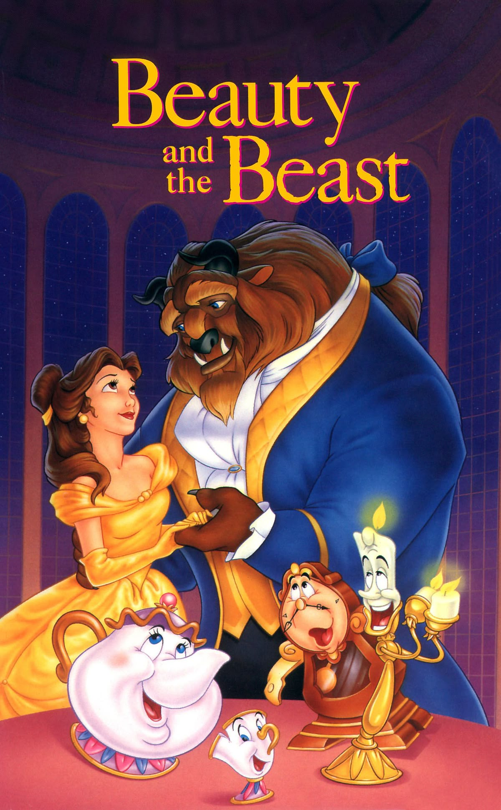
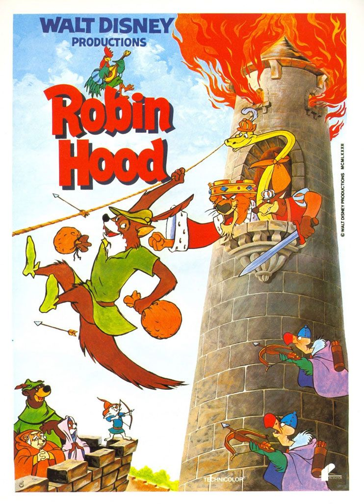
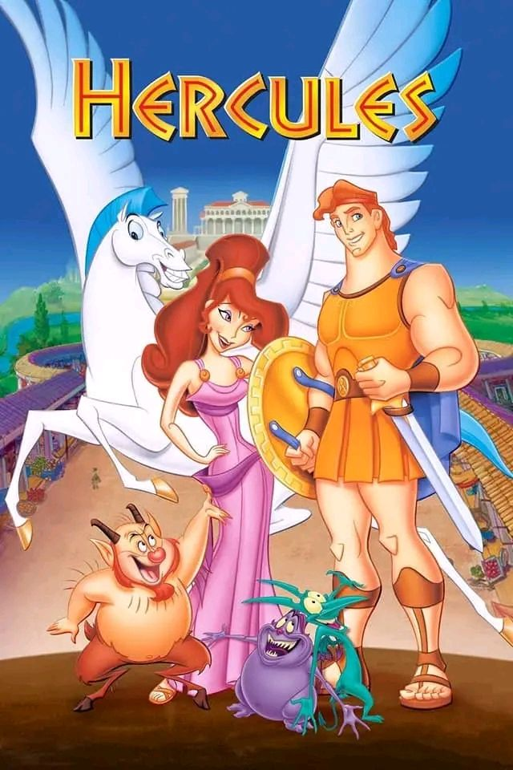
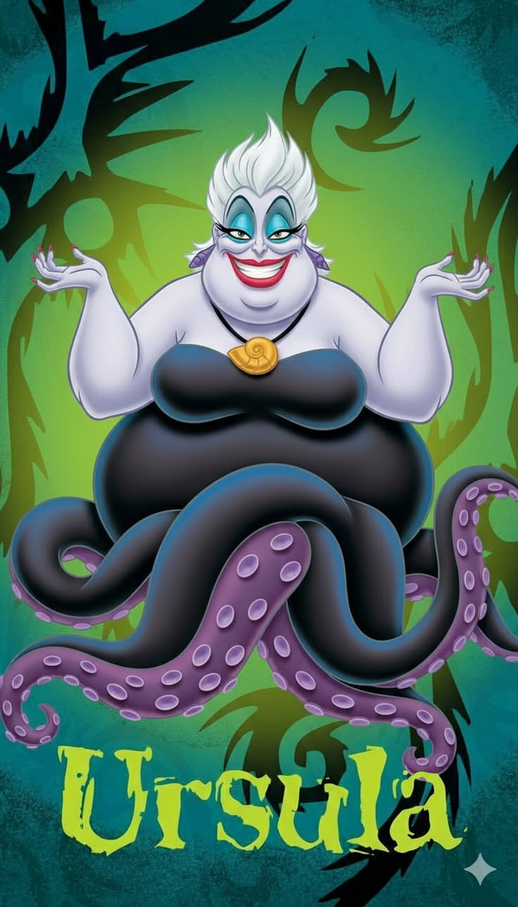

Música favoritas de Disney
Todas la imagenes y audios pertenecen a su creador(autor), se utilizan como ejemplo para proyecto escolar.
Como lo había mencionado en la sección de películas,
la música es una de las partes que mas me gustan de las animaciones,
ya que están hechas para que se nos queden pegadas,
por tal motivo estas pocas canciones que coloco en esta página
son aquellas que quiera escucharlas y cantarlas una y otra vez.
En esta sección para su diseño utilice el llamado de las imágenes y se les dio diseño a los recuadros que las contienen,
así como separación entre cada una de ellas, con una separación de 3 imágenes y audios por renglón.
Se aplico un reproductor de audio para poder hacer el llamado del audio de su respectiva carpeta,
para hacer una demostración de ellas. A este reproductor se le dio un estilo para poder hacerlo mas pequeño,
ya que el orinal tenía un tamaño más grande.
No se habla de Bruno

Fuego del infierno

La Bella y la Bestia

Jamás en Nottingham

No hablare de mi amor

Pobres almas en desgracia
